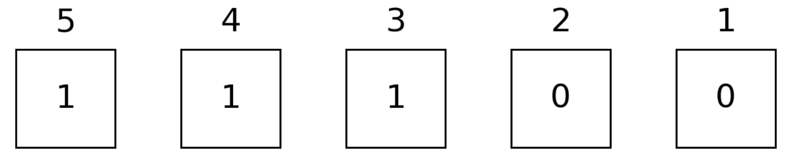
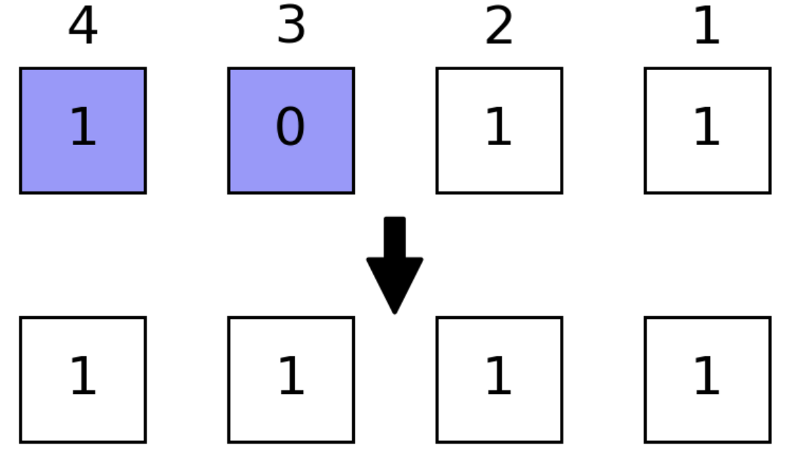

Conventions
We use $σ$ to represent a binary digit, its subtitle usually refers to the position of a given binary digit inside a number (bit string).
In computing, bit numbering (or sometimes bit endianness) is the convention used to identify the bit positions in a binary number or a container of such a value. The bit number starts with zero and is incremented by one for each subsequent bit position. See also Bit numbering((Bit endianness)).
There are two different representation orders of a bit string:
- Least significant bit 0 bit numbering
- Most significant bit 0 bit numbering
LSB 0 bit numbering
This follows the order of BitArray or other array representation of bits, e.g
For number 0b011101 (29)
\[\sigma_1=1, \sigma_2=0, \sigma_3=1, \sigma_4=1, \sigma_5=1, \sigma_6=0\]
See also LSB 0 bit numbering
MSB 0 bit numbering
This follows the order of binary literal 0bxxxx, e.g
For number 0b011101 (29)
\[\sigma_1=0, \sigma_2=1, \sigma_3=1, \sigma_4=1, \sigma_5=0, \sigma_6=1\]
See also MSB 0 bit numbering.
Integer Representations
We use an Int type to store bit-wise (spin) configurations, e.g. 0b011101 (29) represents the configuration
\[\sigma_1=1, \sigma_2=0, \sigma_3=1, \sigma_4=1, \sigma_5=1, \sigma_6=0\]
so we annotate the configurations $\vec σ$ with integer $b$ by $b = \sum\limits_i 2^{i-1}σ_i$.  e.g. we can use a number
e.g. we can use a number 28 to represent bit configuration 0b11100
julia> bdistance(0b11100, 0b10101) == 2 # Hamming distancetruejulia> bit_length(0b11100) == 5true
In BitBasis, we also provide a more readable way to define these kind of objects, which is called the bit string literal, most of the integer operations and BitBasis functions are overloaded for the bit string literal.
We can switch between binary and digital representations with
bitarray(integers, nbits), transform integers to bistrings of typeBitArray.packabits(bitstring), transform bitstrings to integers.baddrs(integer), get the locations of nonzero qubits.
julia> bitarray(4, 5)5-element BitVector: 0 0 1 0 0julia> bitarray([4, 5, 6], 5)5×3 BitMatrix: 0 1 0 0 0 1 1 1 1 0 0 0 0 0 0julia> packbits([1, 1, 0])3julia> bitarray([4, 5, 6], 5) |> packbits;
A curried version of the above function is also provided. See also bitarray.
Bit String Literal
bit strings are literals for bits, it provides better view on binary basis. you could use @bit_str, which looks like the following
julia> bit"101" * 21010 ₍₂₎julia> join([bit"101" for i in 1:10]...)101101101101101101101101101101 ₍₂₎julia> repeat(bit"101", 2)101101 ₍₂₎julia> bit"1101"[2]0
to define a bit string with length. bit"10101" is equivalent to 0b10101 on both performance and functionality but it store the length of given bits statically. The bit string literal offers a more readable syntax for these kind of objects.
Besides bit literal, you can convert a string or an integer to bit literal by BitStr, e.g
julia> BitStr{5}(0b00101)00101 ₍₂₎
Bit Manipulations
readbit and baddrs

julia> readbit(0b11100, 2, 3) == 0b10 # read the 2nd and 3rd bits as `x₃x₂`truejulia> baddrs(0b11100) == [3,4,5] # locations of one bitstrue
bmask
Masking technic provides faster binary operations, to generate a mask with specific position masked, e.g. we want to mask qubits 1, 3, 4
julia> mask = bmask(UInt8, 1,3,4)0x0djulia> BitStr{4}(mask)1101 ₍₂₎
allone and anyone
with this mask (masked positions are colored light blue), we have 
julia> allone(0b1011, mask) == false # true if all masked positions are 1truejulia> anyone(0b1011, mask) == true # true if any masked positions is 1true
ismatch

julia> ismatch(0b1011, mask, 0b1001) == true # true if masked part matches `0b1001`true
flip

julia> BitStr{4}(flip(0b1011, mask)) # flip masked positions0110 ₍₂₎
setbit

julia> setbit(0b1011, 0b1100) == 0b1111 # set masked positions 1true
swapbits

julia> swapbits(0b1011, 0b1100) == 0b0111 # swap masked positionstrue
neg
julia> neg(0b1011, 2) == 0b1000true
btruncate and breflect

julia> btruncate(0b1011, 2) == 0b0011 # only the first two qubits are retainedtrue
breflect

julia> breflect(4, 0b1011) == 0b1101 # reflect little end and big endtrue
For more detailed bitwise operations, see manual page BitBasis.
Number Readouts
In phase estimation and HHL algorithms, one need to read out qubits as integer or float point numbers. A register can be read out in different ways, like
bint, the integer itselfbint_r, the integer with bits small-big end reflected.bfloat, the float point number $0.σ₁σ₂ \cdots σ_n$.bfloat_r, the float point number $0.σ_n \cdots σ₂σ₁$.

julia> bint(0b010101)0x15julia> bint_r(0b010101, nbits=6)0x2ajulia> bfloat(0b010101)0.65625julia> bfloat_r(0b010101, nbits=6);
Notice the functions with _r as postfix always require nbits as an additional input parameter to help reading, which is regarded as less natural way of expressing numbers.
Iterating over Bases
Counting from 0 is very natural way of iterating quantum registers, very pity for Julia
julia> itr = basis(4)ERROR: MethodError: no method matching basis(::Int64) Closest candidates are: basis(::AbstractArray) @ BitBasis ~/work/BitBasis.jl/BitBasis.jl/src/bit_operations.jl:28 basis(::Type{DitStr{D, N, T}}) where {D, N, T} @ BitBasis ~/work/BitBasis.jl/BitBasis.jl/src/DitStr.jl:193 basis(::DitStr) @ BitBasis ~/work/BitBasis.jl/BitBasis.jl/src/DitStr.jl:192julia> collect(itr)ERROR: UndefVarError: `itr` not defined
itercontrol is a complicated API, but it plays an fundamental role in high performance quantum simulation of Yao. It is used for iterating over basis in controlled way, its interface looks like
julia> for each in itercontrol(7, [1, 3, 4, 7], (1, 0, 1, 0)) println(string(each, base=2, pad=7)) end0001001 0001011 0011001 0011011 0101001 0101011 0111001 0111011
Reordering Basis
We store the wave function as $v[b+1] := \langle b|\psi\rangle$. We are able to reorder the basis as
julia> v = onehot(5, 0b11100) # the one hot vector representation of given bitsERROR: MethodError: no method matching onehot(::Int64, ::UInt8)julia> reorder(v, (3,2,1,5,4)) ≈ onehot(5, 0b11001)ERROR: UndefVarError: `v` not definedjulia> invorder(v) ≈ onehot(5, 0b00111) # breflect for each basisERROR: UndefVarError: `v` not defined